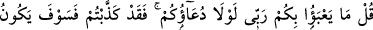
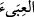
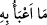

ol.” dedi. Hristiyan: “Şimdi tamam, Allah’ı görmekten daha üstün bir şey olmaz.” dedi
ve müslüman oldu. Bir müddet sonra da vefat etti. Komşusu rüyâsında onu cennette bir
bineğe binmiş olarak gördü. Ona: “Sen falan kimse misin?” diye sordu. O da: “Evet”
dedi. Sonra, “Rabbin sana nasıl muâmele etti?” diye sordu. O da şöyle dedi: “Ruhum
çıkınca arşa götürüldü. Allah Teâlâ: “Sen bana kavuşma arzusuyla îman ettin. Ben de
sana rızâmı ve ebedî hayâtı veriyorum” buyurdu.”
77. (Rasûlüm!) De ki: (Kulluk ve) yalvarmanız olmasa, Rabbim size ne diye
değer versin? (Ey inkârcılar! Size Rasûl’ün bildirdiklerini) kesinkes yalan
saydınız; onun için azâb yakanızı bırakmayacaktır!
Ey Muhammed, bütün insanlara “De ki: (Kulluk ve) yalvarmanız olmasa, Rabbim
size ne diye değer versin?” Bu, insanlar arasında mü’minlerin durumunu beyan eder.
Bu cümle soru cümlesi veya olumsuz bir cümledir. Olumsuz olduğu zaman anlamı “…
Rabbim size değer vermez, sizi önemsemez ve size îtibar etmez.” şeklinde olur.
“
(duâ, yalvarma)” kelimesi, “Onlar Allah ile beraber (tuttukları) başka bir
ilâha yalvarmazlar.” (el-Furkân, 25/68) ve benzeri âyetlerde olduğu gibi burada da
ibâdet mânâsınadır.
Cümlenin soru cümlesi olmasına göre âyetin mânâsı şöyledir: “Allaha ibâdetiniz,
O’na itâat ve kulluğunuz olmasa, Rabbim size ne önem verir, sizin neyinize ve hangi
durumunuza îtibar eder?” Çünkü insanın şerefi ve değeri Allah’ı bilmekle ve O’na
kulluk yapmakladır. Aksi halde insan ve diğer hayvanlar eşit olmuş olur.
Zeccâc der ki: “Allah’a ibâdet ve kulluğunuz olmasa, Allahın katında sizin ne
kıymetiniz, ne ölçü ve değeriniz olur? Çünkü “
” (kesre ve fetha ile) kelimesinin asıl
anlamı, hangi şeyden olursa olsun yük ve ağırlık demektir. Hakîkatte “
”nin anlamı,
“Ben onun için bir değer ve kıymet görmüyorum.” demektir. Râğıb da bu âyette bu
mânâya meyletmiştir.
Bu âyet hakkında daha başka tefsirler de vardır. Muhakkıklere göre en âşikâr olanı,
zikrettiğimizdir.
“(Ey inkârcılar! Size Rasûl’ün bildirdiklerini) kesinkes yalan saydınız;” Âyetin bu
kısmı da insanlardan kâfir olanların durumunu beyan etmektedir. Yâni ey kâfirler, size
haber verdiğim şeyleri yalanladınız. Çünkü onlara muhâlefet ettiniz, Allah katında önem
ve itibardan düştünüz, herhangi bir kıymet ve değer ifâde etmekten çıktınız.
“onun için azâb yakanızı bırakmayacaktır!” Yâni şüphesiz bu yalanlamanın cezâsı
ve tesîri onları yakalayacak ve mutlaka yüz üstü ateşe atılmalarına neden olacaktır.
Nitekim âyetteki “fâ” harfi önceki sebepten, yâni yalanlamadan dolayı sonraki durumun,